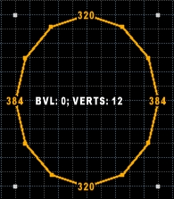
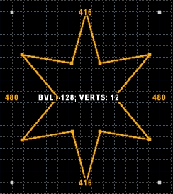

This mode lets you draw various ellipsoid shapes.
Found in: Preferences -> Controls -> Drawing.
Default key: Ctrl-Alt-D.
Additional actions: Increase Sudivision Level, Decrease Sudivision Levell, Increase Corners Bevel, Decrease Corners Bevel.
You can activate this mode by pressing Alt-Shift-D (default key).
You can use "Increase Sudivision Level" and "Decrease Sudivision Level" actions to control the number of sides ellipse has:

You can use "Increase Corners Bevel" and "Decrease Corners Bevel" actions to bevel the ellipse:

The bevel ammount is based on the current grid size.